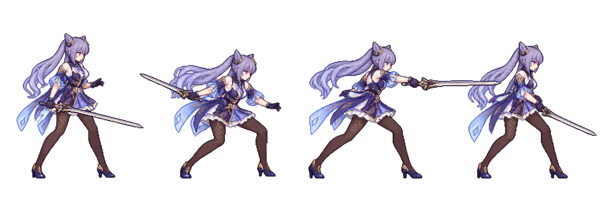
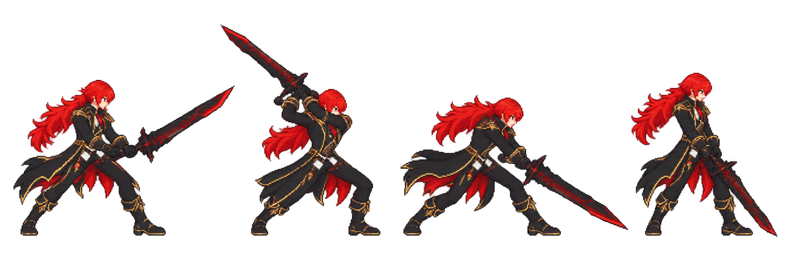
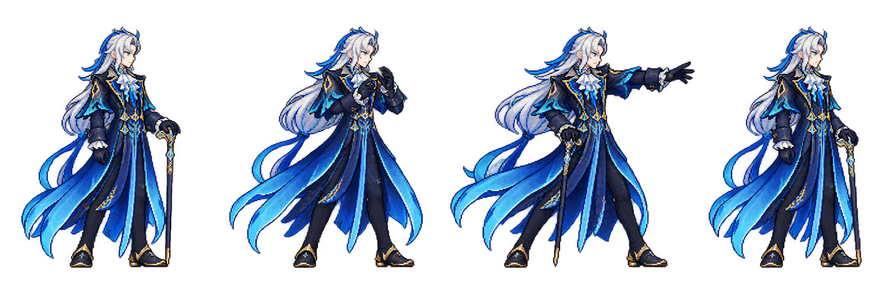
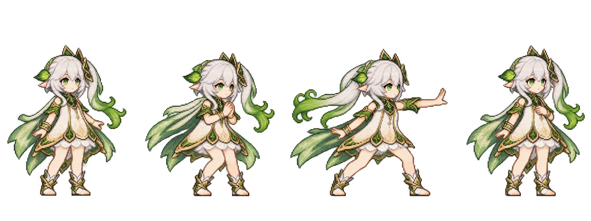

五角色动作样板 · 第一轮
关键姿势候选，尚非合格游戏动画。保持战斗视角；先验姿势，再补帧，再加特效。图中的问题保留在验收栏。
制作标准 · 实际提示词 · 返回动作探针
刻晴 · 快剑与命中演出
刀光跟剑尖；脚底锚点稳定

验收：释放姿势偏直伸，第三把剑侵入第四格；须单帧重做
迪卢克 · 重剑与火鸟
双手持剑，起手与收势有重量

验收：需核查每格完整剑身、脚步与握柄；火鸟另做独立特效
那维莱特 · 前伸施法与束流
横版前伸姿态，法杖与施法手分开

验收：手掌/袖口发射锚点和角色半透明边缘待处理；四格不能直接当逐帧
纳西妲 · 短暂空间演出
领域意象改为命中演出，不长期铺场

验收：两轮仍有光晕和偏正面站姿；不通过运行时素材验收
使用内置 imagegen 生成，以既有角色素材为参考；未改正式战斗、未导出新GIA、未删除旧文件。